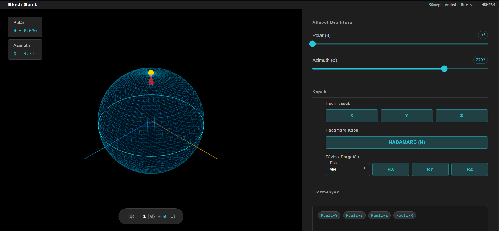
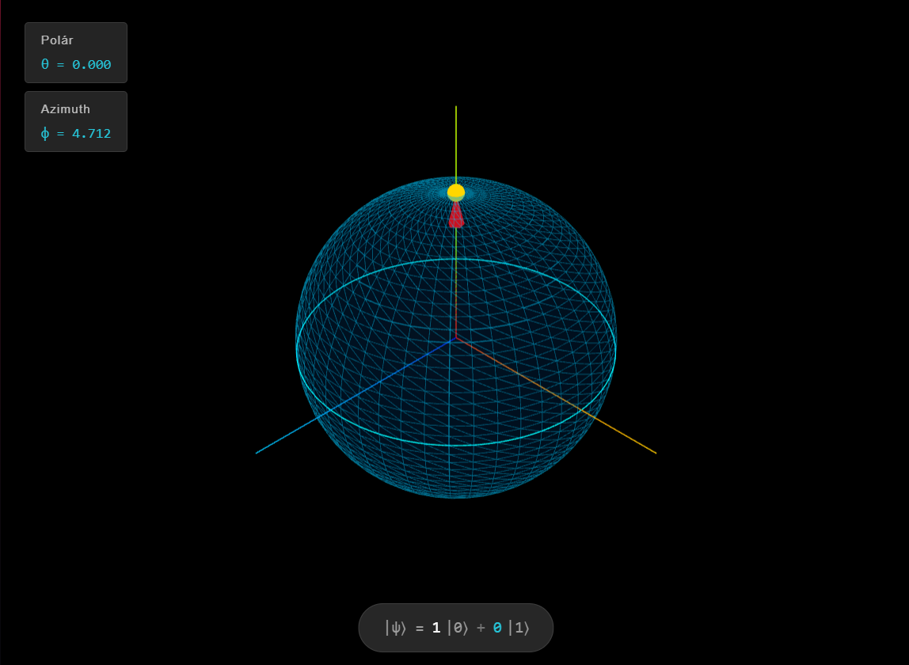
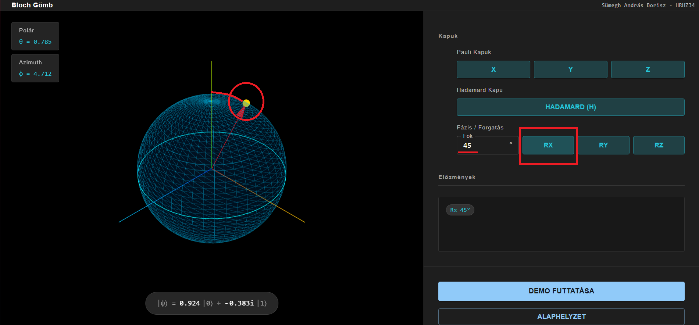

Ez a projekt egy interaktív webes szimulátor, amely megmutatja, hogyan viselkednek a kvantumbitek (qubitek) a Bloch-gömb segítségével. A program különböző kvantumkapukat (X, Y, Z, Hadamard, forgatások) tud alkalmazni, és láthatjuk, hogyan változik az állapot a 3D térben.
 *A szimulátor főképernyője: bal oldalon a Bloch-gömb, jobb oldalon a vezérlők*A qubit állapota a klasszikus bittől eltérően nem csak 0 vagy 1 lehet, hanem ezek szuperpozíciója is. Ezt matematikailag így írjuk:
$$ |\psi\rangle = \alpha|0\rangle + \beta|1\rangle $$
ahol $|\alpha|^2 + |\beta|^2 = 1$ (normalizálás).
A Bloch-gömb egy egységsugarú gömb, amelyen minden pont egy qubit állapotot jelöl. Két szöggel írható le az állapot:
$$ |\psi\rangle = \cos\left(\frac{\theta}{2}\right)|0\rangle + e^{i\phi}\sin\left(\frac{\theta}{2}\right)|1\rangle $$
 *A Bloch-gömb: az északi pólus a |0⟩, a déli pólus a |1⟩ állapot*A kvantumkapuk olyan műveletek, amelyek megváltoztatják a qubit állapotát. Minden kapu a Bloch-gömbön egy forgatásnak felel meg.
A Pauli-kapuk 180°-os forgatások a gömb tengelyei körül:
X kapu (NOT): Megcseréli a |0⟩ és |1⟩ állapotokat (X tengely körüli forgatás)
$$ X = \begin{pmatrix} 0 & 1 \\ 1 & 0 \end{pmatrix} $$
Y kapu: Y tengely körüli forgatás
$$ Y = \begin{pmatrix} 0 & -i \\ i & 0 \end{pmatrix} $$
Z kapu: Fázisfordítás (Z tengely körüli forgatás)
$$ Z = \begin{pmatrix} 1 & 0 \\ 0 & -1 \end{pmatrix} $$
 *Példa: A Pauli-Y kapu hatása, amely az Y tengely körül forgat 180 fokot.*
*Példa: A Pauli-Y kapu hatása, amely az Y tengely körül forgat 180 fokot.*
A Hadamard kapu szuperpozíciót hoz létre:
$$ H = \frac{1}{\sqrt{2}} \begin{pmatrix} 1 & 1 \\ 1 & -1 \end{pmatrix} $$
 *A Hadamard kapu szuperpozícióba viszi a qubitet.*
*A Hadamard kapu szuperpozícióba viszi a qubitet.*
Tetszőleges szöggel forgathatunk a tengelyek körül:
$$ R_x(\gamma) = \begin{pmatrix} \cos\frac{\gamma}{2} & -i\sin\frac{\gamma}{2} \\ -i\sin\frac{\gamma}{2} & \cos\frac{\gamma}{2} \end{pmatrix} $$
$$ R_y(\gamma) = \begin{pmatrix} \cos\frac{\gamma}{2} & -\sin\frac{\gamma}{2} \\ \sin\frac{\gamma}{2} & \cos\frac{\gamma}{2} \end{pmatrix} $$
$$ R_z(\gamma) = \begin{pmatrix} e^{-i\frac{\gamma}{2}} & 0 \\ 0 & e^{i\frac{\gamma}{2}} \end{pmatrix} $$
 *Példa: 45°-os forgatás az X tengely körül (Rx 45°).*A program két részre oszlik:
Bal oldal - Vizualizáció:
 *A jobb oldali vezérlőpanel: csúszkák, kapuk és forgatások.*
*A jobb oldali vezérlőpanel: csúszkák, kapuk és forgatások.*
Jobb oldal - Vezérlők:
A projekt egy modern webes alkalmazás:
A matematikai számításokat (quantumMath.ts) külön modullal oldottuk meg, ami mátrixszorzásokkal hajtja végre az állapot-transzformációkat.
git clone https://github.com/boriszbandi/blochHF.git
cd blochHF
npm install
npm run dev
Standalone verzió készítése:
npm run build
A dist/index.html egyetlen fájlként tartalmazza az egész alkalmazást, szerver nélkül is használható.